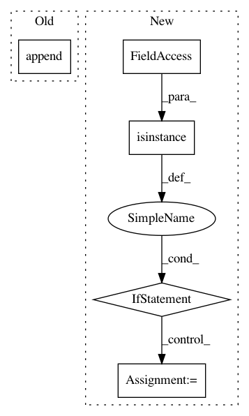

874da9a25fd4f1d8aac44d29c365fa2143f7793e,python/ray/util/sgd/torch/training_operator.py,TrainingOperator,register,#TrainingOperator#,167
Before Change
if len(self._schedulers) == 1:
return_vals.append(self._schedulers[0])
else:
return_vals.append(self._schedulers)
return tuple(return_vals)
def register_data(self, *, train_loader=None, validation_loader=None):
After Change
if not isinstance(self._schedulers, Iterable):
self._schedulers = [self._schedulers]
else:
if isinstance(schedulers, Iterable):
self._schedulers = []
else:
self._schedulers = None
if criterion:
logger.debug("Registering loss.")
self._criterion = criterion
if self.use_gpu and torch.cuda.is_available():
In pattern: SUPERPATTERN
Frequency: 4
Non-data size: 5
Instances
Project Name: ray-project/ray
Commit Name: 874da9a25fd4f1d8aac44d29c365fa2143f7793e
Time: 2020-10-01
Author: amogkam@users.noreply.github.com
File Name: python/ray/util/sgd/torch/training_operator.py
Class Name: TrainingOperator
Method Name: register
Project Name: keras-team/autokeras
Commit Name: 4b2a2f18a4da11d9573d341c38db2c754c77fff5
Time: 2019-09-24
Author: 45730028+yufei-12@users.noreply.github.com
File Name: autokeras/auto_model.py
Class Name: AutoModel
Method Name: _postprocess
Project Name: NVIDIA/OpenSeq2Seq
Commit Name: 0087cadc21b723f49bff2c56416a2412e4db11e7
Time: 2018-06-15
Author: igor.a.gitman@gmail.com
File Name: open_seq2seq/optimizers/optimizers.py
Class Name:
Method Name: optimize_loss
Project Name: raghakot/keras-vis
Commit Name: 2443550ee6915daf6e7ff6306f3dc2922752ea4b
Time: 2017-07-09
Author: ragha@outlook.com
File Name: vis/backend/tensorflow_backend.py
Class Name:
Method Name: modify_model_backprop